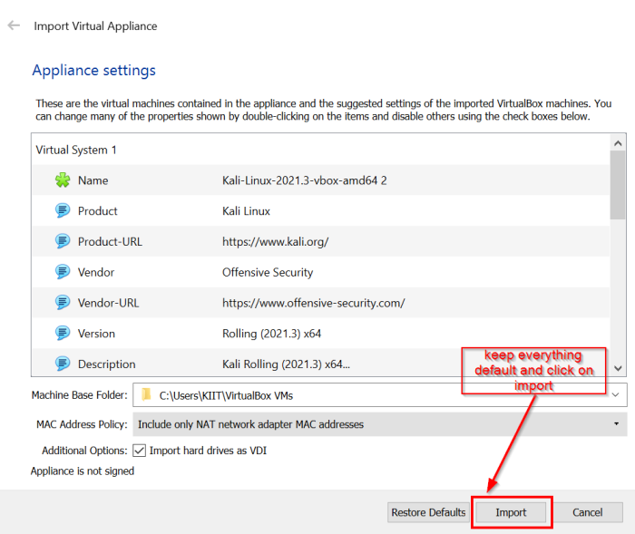
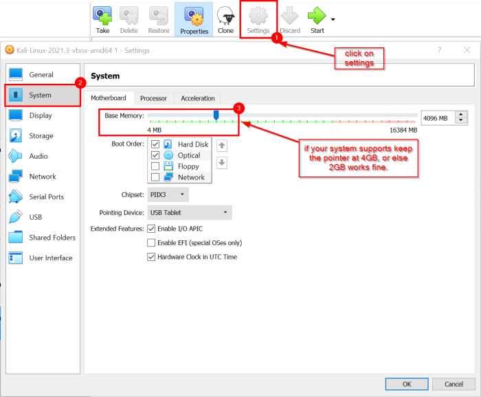
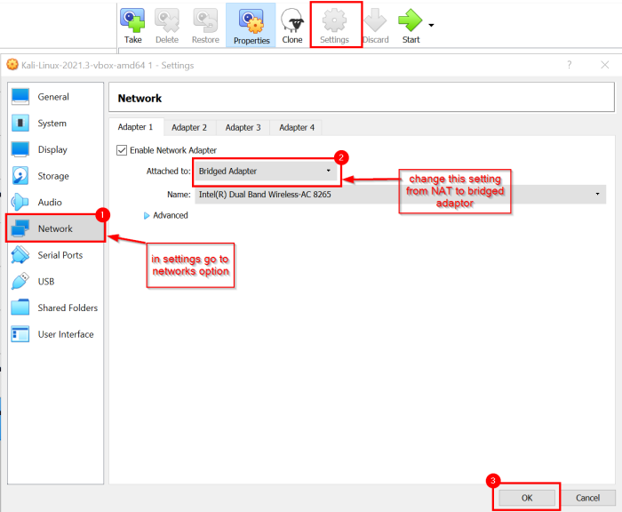

Session 1
Session 1
Install
1. install VBox :
https://download.virtualbox.org/virtualbox/6.1.28/VirtualBox-6.1.28-147628-Win.exe (for windows users)
https://download.virtualbox.org/virtualbox/6.1.28/VirtualBox-6.1.28-147628-OSX.dmg (for mac users)
2. install kali :
https://kali.download/virtual-images/kali-2021.3/kali-linux-2021.3-virtualbox-amd64.ova(this is a .ova file try installing the same not other files)
Settings
install and setup Virtual box, a dialogue box will appear there is no need to change any of the settings all the settings are default.

After installing VBox and kali you just have to open the .ova file by doubble clicking on it, you will be redirected to virtual box, keeping all the given settings as default click on import (importing might take some time).

other than this make sure to change the following
:1. 
2. 
you are ready to run your kali now
Setting up kali
By defalut username and password is "kali"
after you've logged in,
• To open terminal - ctrl + alt + t (or else there is a small black box at top left corner for terminal)
• run the command to update - sudo apt update
• to change password -
sudo passwd kali
it will ask for current password and then new password type accordingly
That's all you need for now :))
Other commands which I used
sudo apt update
sudo passwd $user_name # to change password
sudo useradd $new_user_name #to add a new user
sudo usermod -a -G $user_name root #to give root priviledges to the user
sudo -l # to check sudo rights
history #to see previously run commands
sudo usermod -aG vboxsf $user_name #if you're facing any issue with shared file folder (error: permission denied)
sudo passwd $user_name # to change password
sudo useradd $new_user_name #to add a new user
sudo usermod -a -G $user_name root #to give root priviledges to the user
sudo -l # to check sudo rights
history #to see previously run commands
sudo usermod -aG vboxsf $user_name #if you're facing any issue with shared file folder (error: permission denied)
Other than this we will be starting with basics of ethical hacking and linux commands from next class ;)